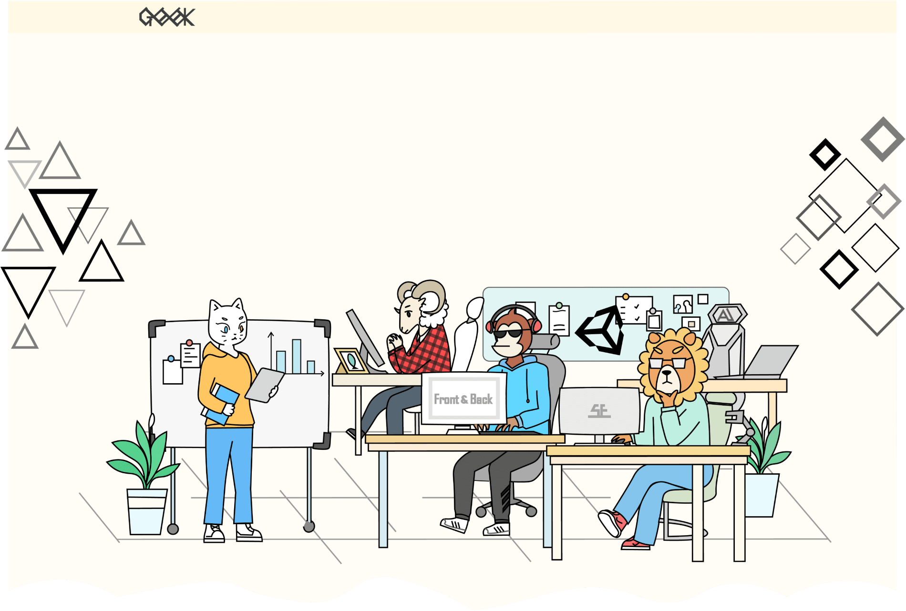
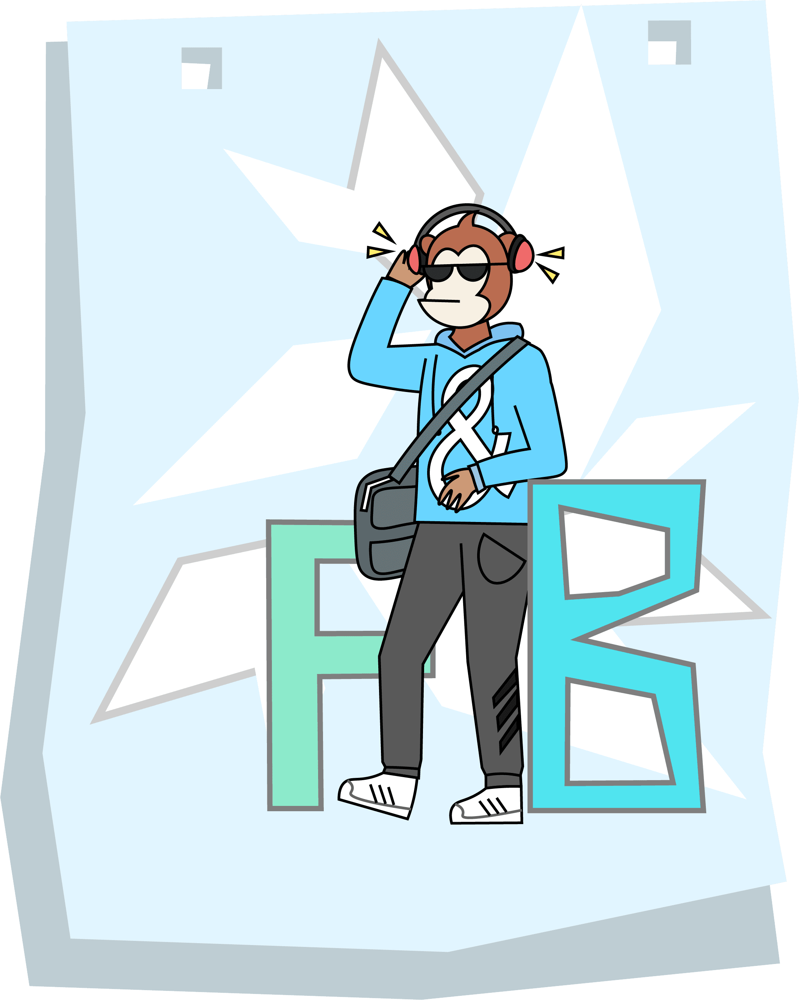
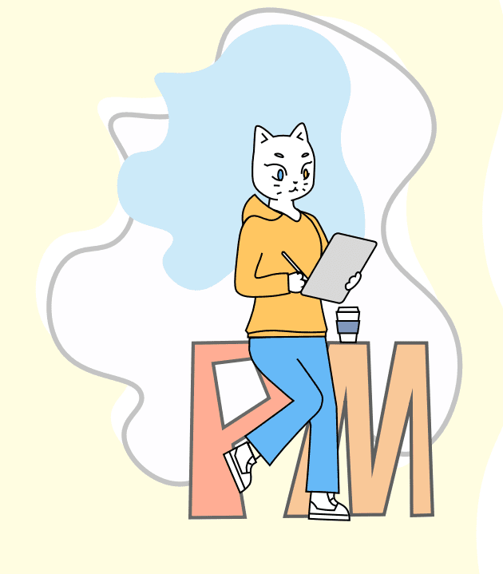
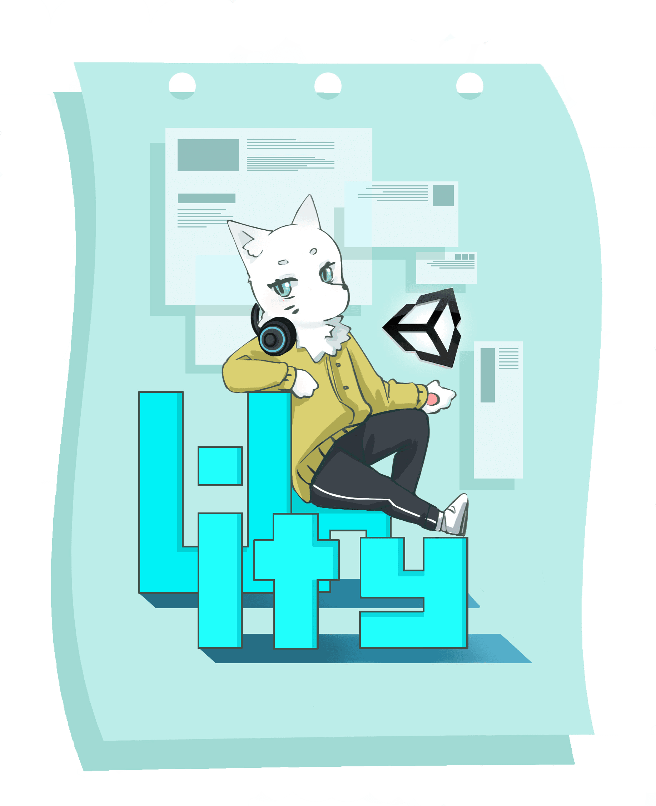
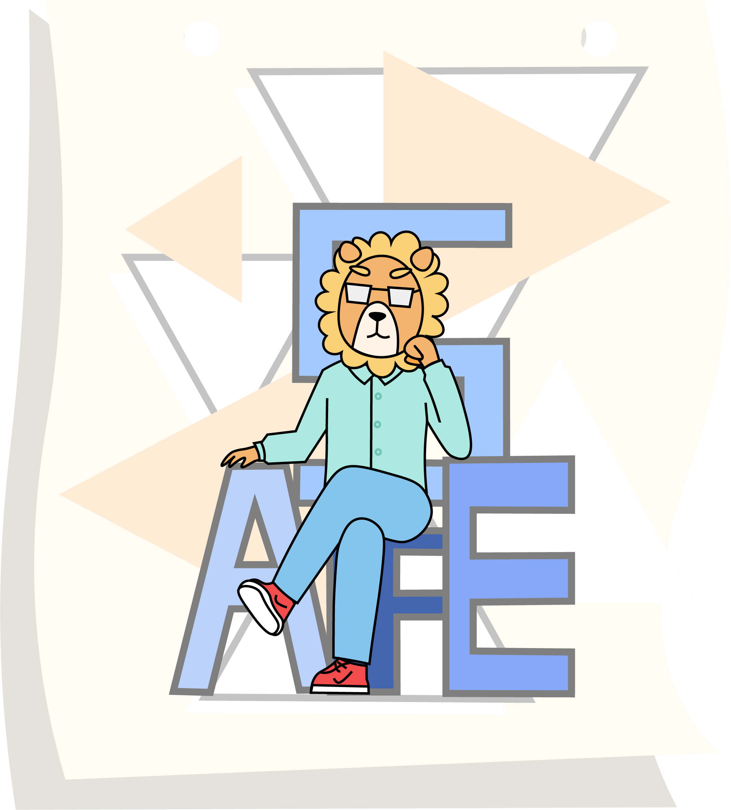

Keep Curiosity. The Power Of Change.

"Stay Hungry, Stay Foolish"
前端：前端开发是创建Web或app视觉界面呈现给用户的过程通过HTML，CSS及JavaScript以及衍生出来的各种技术、框架、解决方案，实现互联网产品的用户界面交互。
后端：通常也称服务器端开发。不对用户显示,负责处理前端的请求，进行逻辑处理和数据交互。 客户端: 移动应用开发是为了小型、无线计算设备编写软件的流程和程序的集合，例如智能手机或平板电脑。

"好的软件的特征是,明明没用过，但总觉得用过似的。"
PM是针对某一项或是某一类的产品进行规划和管理的人员。 PM需要拥有缜密的产品逻辑思维，研究用户心理，负责产品的整个生命周期。 PM参与产品的UI和交互设计，为设计和开发确定产品原型，能够将产品变得有个性,操作变得舒适简单、自由。 PM需要一定的文档能力和沟通能力，能够在团队合作的过程中跟各个角色进行有效沟通。

"TECH OTAKUS SAVE THE WORLD"
对游戏开发的热爱和追求，使我们相聚于此。 涉及计算机图形学的学习，我们使用物理模拟引擎Unity开发我们所追求的世界，一个故事，一个角色，在我们的世界里改变现实，创造新的可能，我们参与，我们改变，我们创造...

"路漫漫其修远兮，非大毅力者不能"
我们主要学习Web安全和二进制安全。在Web安全中我们将学习和实践Web漏洞挖掘技术，也将探索和讨论Web安全实践的方法。在二进制安全中我们专注于分析和防御与计算机程序、系统相关的威胁，同时实践漏洞分析和修补。耐心和钻研缺一不可。

每周我们会举行一次技术例会，用来汇报我们的学习内容，供成员之间交流学习。
多元化是我们的特色。在这里，你可以拥有多种方向选择，前后端、安全、AI、产品/设计、游戏等。
耐心、毅力是我们必备的品质，每周我们会至少花30小时在实验室中。以保证技术的精进。
ps:非新思路统招只有通过发送邮件自我介绍后，收到邮件回执后才会被允许进群,在读学生, 都可邮件到newthread_geek@outlook.com报名加入.(信中需备注个人基本信息以及意向方向,此招新活动为长期招新)
1. 什么是Geek(极客)? Geek精神又是什么?
2. 招新是安排在什么时间?
3. 我们有考核吗? 考核流程是怎样的呀?
4.考核是怎样的形式？
5.进入Geek组之后都有什么福利呢？
6.进入团队会影响我的日常学习吗？
7.老师以及学长学姐们的期望是什么?